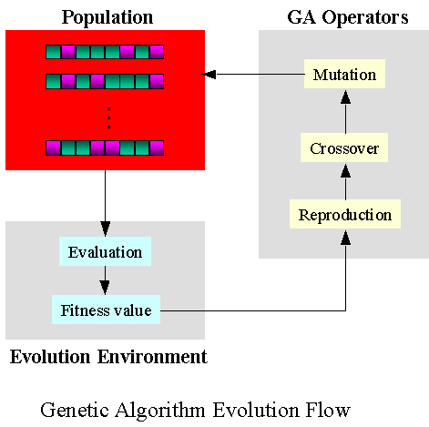
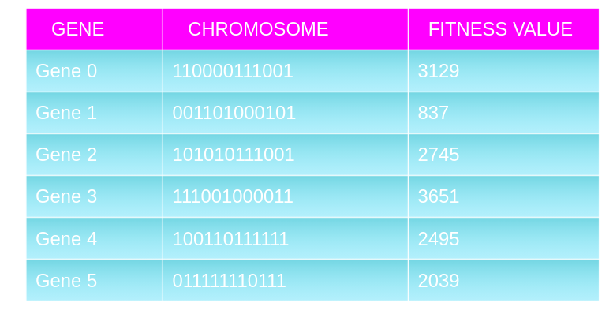

Function search/generation using Genetic algorithm
This is an implementation of the Simple Genetic Algorithm, a metaheuristic search and optimization technique based on principles present in natural evolution.
Motivation
Many problems have optimal algorithms developed for them, while many others require us to randomly guess until we get a good answer. Even an optimal solution becomes slow and complex at a certain scale, at which point we can turn to natural processes to see how they reach acceptable results. GA algorithms have better intelligence than random search algorithms because they use historical data to take the search to the best performing region within the solution space.
Problem Statement:
The function search problem tries to evolve a function that optimizes over a certain condition defined by “ fitness function” using a genetic algorithm.
Pool of function candidates [log(x), x , -x , log(-x), e^x, e^-x, 1/x ,-1/x, sin(x), cos(x)]
Initially, the algorithm starts with several random functions, generated using different combinations from the Hypothesis pool. GA maintains a population of chromosomes. Every chromosome plays the role of providing a possible solution for the problem. The idea is that “evolution” will find an optimal solution for the problem after a number of successive generations similar to natural selection.
Algorithm
Given a list of genes and a fitness function, the algorithm starts from a random population and evolves it, generation after generation, until it has converged to a good solution.

Reproduction
It is a process of finding successors to the current chromosomes. Every reproduction step will produce the chromosomes that are more fit for the problem. Over multiple iterations, the chunk of the range that a chromosome takes is proportional to its fitness. This results in a fitter chromosome getting a bigger chunk
Crossover
With the predefined probability “crossoverProbability”, we select parents for breeding. The selected parents are shuffled, allowing any combinations to happen. We take pairs of parents and apply the crossover operator. The children replace their parents in the population.
Mutation
With predefined probability “mutationProbability”, we perform recombination on the chromosomes.
Function search Approach
I used a binary genetic algorithm to solve the problem which accepts a binary string(Eg:’111000011010’).To use the algorithm for finding the correct function that optimizes my pattern, I mapped the chromosome length to the number of candidates in the hypothesis. Each combination of the binary string will produce a unique function.
Fitness function
I experimented usin different fitness functions. Below is the visualization of the functions I experimented with
Criteria: The chromosomes that are more fit have a better chance of survival. Fitness is a function that measures the quality of the solution represented by the chromosome. Fitness function converts a chromosome into an arbitrary double that represents the fitness of the chromosome.

Training
It runs for any number of eras. In each era, we:
- perform reproduction to create a new population from the old population
- perform crossover on the population
- perform mutation on the population
Limitations of genetic algorithms
- They are not effective in solving simple problems.
- Lack of proper implementation may make the algorithm converge to a solution that is not optimal.
- The quality of the final solution is not guaranteed.
- Repetitive calculation of fitness values may make some problems to experience computational challenges.
To refer to the code https://github.com/ashleetiw/genetic-algorithm-for-automatic-search-tuning
Ref:http://matheubotha.github.io/DragonBrain/obj_functions/summary.html https://medium.com/backyard-programmers/genetic-algorithm-b5bea51dd969
-->